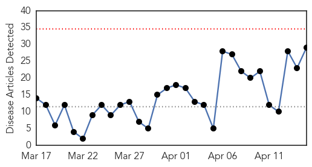
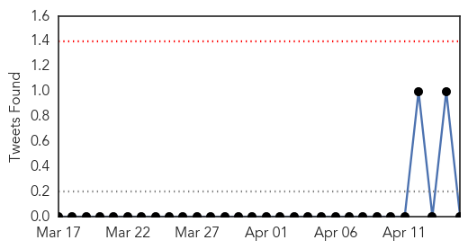

Influenza
30-Day Web Trend
0 alerts, 0 warnings

30-Day Twitter Trend
0 alerts, 0 warnings

Article Locations

Article Confidences

Top Articles:
- 0.972
- Bird Flu Returns to India
- 0.953
- DATCP implementing response to contain, eliminate avian influenza virus
- 0.922
- More Wisconsin farms released from avian flu quarantine
- 0.921
- Vets encouraging dog flu vaccine after Illinois outbreak
- 0.918
- Dog flu bites Midwest, causing concern among local vets
- 0.909
- Veterinarian Explains What Every Dog Owner Should Know About Disease
- 0.895
- Wisconsin Veterinary Diagnostic Lab monitoring bird flu outbreak
- 0.884
- Dog Flu Outbreak Worsens in Midwest
- 0.833
- Eight more cases of bird flu confirmed; threat could last years
- 0.824
- Bird flu: 60,000 chickens culled in Telangana in two days
- 0.813
- Chicago canine influenza epidemic traced to Asian strain
- 0.799
- Dog day care businesses hit by canine flu
- 0.786
- Minnesota officials: Bird flu threat could last years
- 0.772
- Bird flu outbreak in Thimphu camp city
- 0.754
- The Ducks Are Dying
- 0.751
- April 14, 2015 Archives
- 0.751
- April 14, 2015 Archives
- 0.722
- Avian flu outbreak triggers alert in Telangana
- 0.715
- Eight more cases of bird flu confirmed
- 0.644
- Bird flu outbreak could head eastward with fall migration
- 0.644
- Bird flu outbreak could head eastward with fall migration
- 0.634
- Dog flu spreading in the Midwest
- 0.616
- State chicken industry feels aftershocks
- 0.603
- Dog flu worries rise as infections increase in Midwest
- 0.582
- H5N2 Avian Flu Case Confirmed in Iowa County - Story
- 0.574
- H5N2 avian flu confirmed in Iowa
- 0.555
- Bird flu in Iowa turkey flock; sixth Midwest state
- 0.539
- Turkey growers look for end of influenza
- 0.518
- H5N2 strikes 8 more Minnesota farms, reaches Iowa
Top Tweets:
-
No tweets found for Apr 15, 2015
Chikungunya
30-Day Web Trend
1 alerts, 0 warnings

30-Day Twitter Trend
0 alerts, 0 warnings

Article Locations


Article Confidences

Top Articles:
-
No articles found for Apr 15, 2015
Top Tweets:
-
No tweets found for Apr 15, 2015